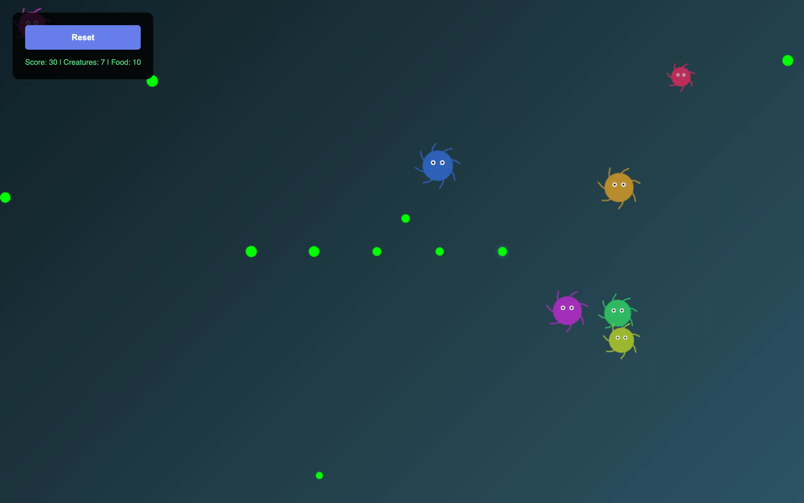

I wanted to build a petri dish you could watch. Drop some creatures into a space with limited food and see what happens. They eat, they grow, they reproduce, they die. The population fluctuates. Sometimes it booms. Sometimes it crashes. You can intervene by dropping food wherever you click, or you can just sit back and let the ecosystem run.

{kind=link}
Procedural creatures
Each creature is generated with random traits: a body color chosen from the full hue spectrum, a size somewhere between 6 and 25 pixels in diameter, and between six and nine tentacles. The tentacles aren't decorative. They animate with a sinusoidal undulation that gives each creature a distinct swimming motion. Two white eyes with black pupils sit on the body, and together with the tentacles they make each creature look vaguely like a cartoon octopus or a deep-sea microorganism.
Creature size isn't fixed. When a creature eats food, it grows. Bigger creatures are easier to see and cover more ground, but they also burn through their energy faster. A creature that gorges itself and grows large has to keep eating at a higher rate or it'll starve. There's a natural tension between growth and sustainability that emerges from the simulation rules without being explicitly programmed.
Behavior
Creatures have a few simple drives. They're attracted to nearby food. They repel from each other at close range. And they flee from the mouse cursor within a 100-pixel radius. The movement model uses velocity physics with acceleration toward goals and deceleration from drag, so creatures don't teleport around. They drift, turn, speed up when they spot food, and scatter when the cursor gets too close.
Food spawns randomly across the canvas and persists for 300 frames before disappearing. If a creature reaches a food item before it despawns, the creature eats it and regains energy. If not, the food vanishes and that's a missed opportunity for the population. The spawn rate is constant, which means the food supply acts as a carrying capacity. Too many creatures and they start competing for insufficient resources. Too few and food piles up uneaten.

{kind=link}
Reproduction and death
Reproduction is stochastic. Each frame, every living creature has a 1% chance of spawning a new creature nearby. The offspring inherits randomized traits rather than copying its parent exactly, so the population stays visually diverse over time. There's no explicit selection pressure based on traits, but creatures that happen to be in food-rich areas survive longer and get more chances to reproduce, which creates a loose spatial selection dynamic.
Every creature has a hunger meter and a lifespan. Hunger increases each frame and resets when the creature eats. If hunger exceeds a threshold, the creature dies. Even well-fed creatures eventually die of old age when their lifespan runs out. Death removes the creature from the simulation immediately. The population counter in the stats display reflects the current living count.
The sandbox
Clicking or tapping anywhere on the canvas drops food at that location. This is the main interaction. You can feed a struggling population, lure creatures to one corner of the screen, or create a trail of food and watch them follow it. The cursor glow (a blue radial gradient that follows your mouse) hints at your presence without being intrusive.
The stats bar tracks score, creature count, and food count in real time. The visual style is dark, with a deep blue-green gradient background that suggests water. The creatures' bright random colors pop against it. The whole thing runs on a single Canvas 2D rendering loop in a single HTML file.